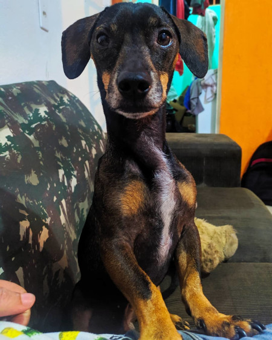
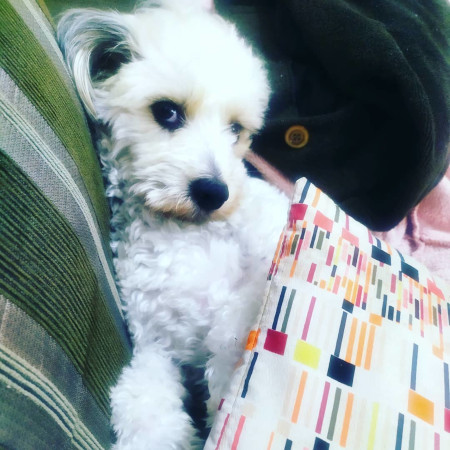

ESTES SÃO ELES...

Luke e Estopa
Este é o Luke.
Um cachorro 🌭
Luke chegou a nossa casa em Janeiro de 2016, bem pequeno e levado.
Leticia o encontrou em alguma rede social que agora não lembro. Ele me perguntou se poderia adotá-lo
eu logo aceitei de bom grado.
Luke é um cachorro sortudo, pois ele sempre ia onde quer que fossemos: em acampamentos, casa de familiares, sítios e afins.
Este é o Estopa

Estopa chegou em nossa casa em Novembro de 2019.
Sempre levava o Luke para passear nas manhãs, e um belo dia, ao sair com Luke eis que ele encontra um cachorro, muito sujo
 Ele nos seguiu até em casa.
Ele nos seguiu até em casa.
eu tinha que sair em seguida, então pensei:O que vou fazer com este dog? Liguei para um colega que morava proximo onde eu o tinha encontrado e perguntei se ele por acaso conhecia o dono dele, o mesmo disse que não e ainda disse para não ficar com ele, pra colocá-lo para fora de casa, mas não fiz isso. O adotamos

Um cachorro negão

Coisas que o luke gosta
- Dormir
- Ir pra rua
- Cobertinha
- Belisco
- Carne
- Ele é bravinho
- Não deixa qualquer um por a mão nele
- Ranzinza
Coisas que o peludo gosta

Coisas que o Topinha gosta
- Vigiar a rua
- Ficar colado na gente
- Raçãonzinha
- Biscoito com manteiga
- Detesta foguete
- è super brincalhão
- Adora brincar